Discover the Best Anime Picks Of All Time
What is the best anime of all time? As anime continues to gain new fans, this question comes up often. Once a niche hobby, anime is now widely popular, with many people having watched at least one series. The greatest anime include timeless classics that shaped the medium, as well as newer hits that have earned massive praise. Spanning many genres and themes, top anime offer something for everyone.
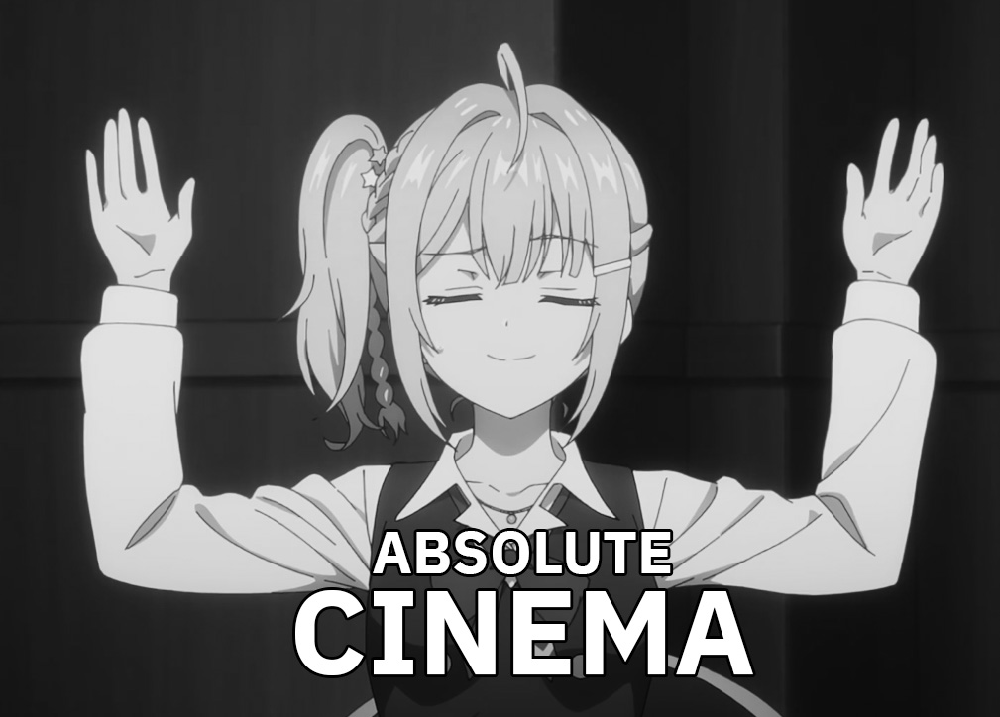
30. Yano Kun's Ordinary Days
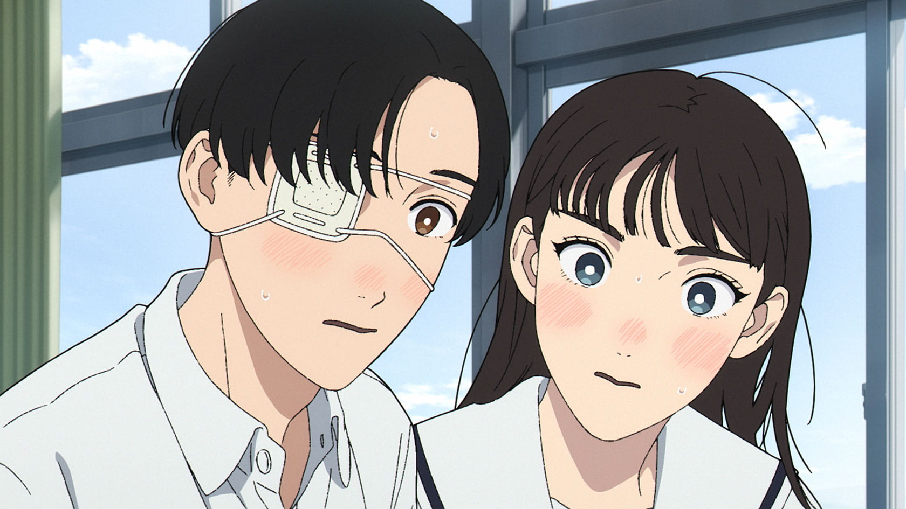
For as long as he can remember, the klutzy Tsuyoshi Yano has been prone to injury. Constantly showing
up to school with fresh scrapes and bruises, he has long become accustomed to the pain and to the
sight of his face covered in bandages. However, Yano's days begin to change for the better when he
is transferred to a new class and meets Kiyoko Yoshida, the class president known for her
reliability and kindheartedness.
Through Yoshida's efforts to learn more about him, Yano
starts to
experience the kind of high school life he has always wished for—one filled with laughter and
camaraderie. Between casual conversations and countless small accidents, the two gradually grow
closer, and their relationship may bloom into something more than just friendship.
29. One Punch Man
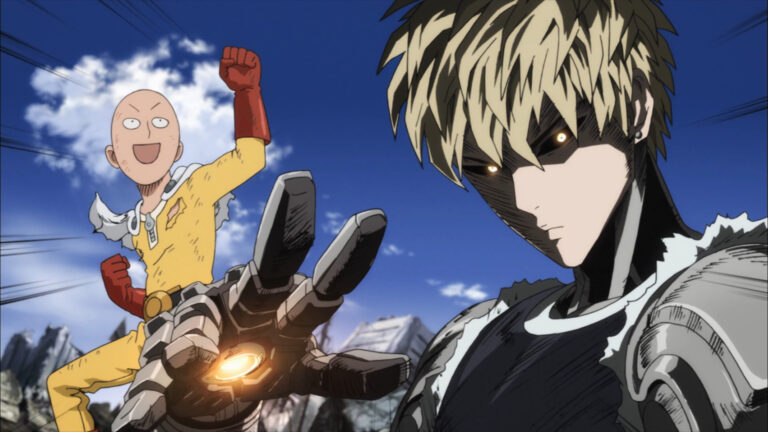
The seemingly unimpressive Saitama has a rather unique hobby: being a hero. In order to pursue his
childhood dream, Saitama relentlessly trained for three years, losing all of his hair in the
process. Now, Saitama is so powerful, he can defeat any enemy with just one punch. However, having
no one capable of matching his strength has led Saitama to an unexpected problem—he is no longer
able to enjoy the thrill of battling and has become quite bored.
One day, Saitama catches
the
attention of 19-year-old cyborg Genos, who witnesses his power and wishes to become Saitama's
disciple. Genos proposes that the two join the Hero Association in order to become certified heroes
that will be recognized for their positive contributions to society. Saitama, who is shocked that no
one knows who he is, quickly agrees. Meeting new allies and taking on new foes, Saitama embarks on a
new journey as a member of the Hero Association to experience the excitement of battle he once felt.
28. Konosuba
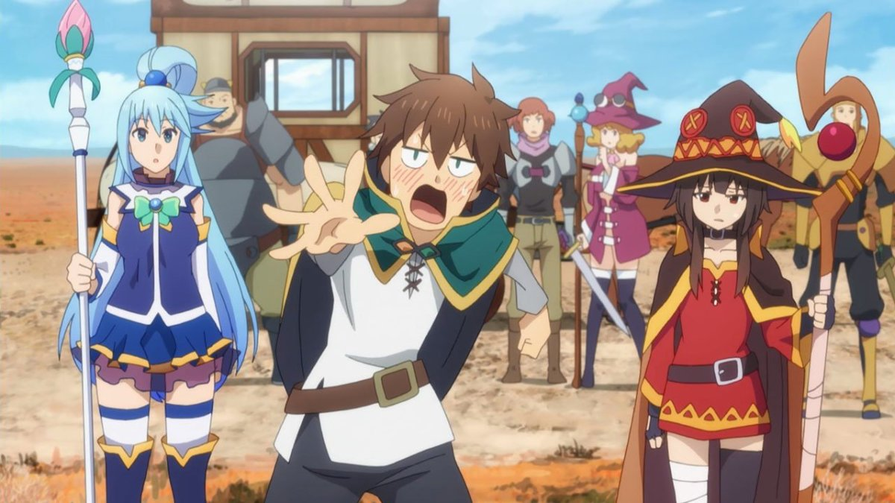
After dying a laughable and pathetic death on his way back from buying a game, high school student
and recluse Kazuma Satou finds himself sitting before a beautiful but obnoxious goddess named Aqua.
She provides the NEET with two options: continue on to heaven or reincarnate in every gamer's
dream—a real fantasy world!
Choosing to start a new life, Kazuma is quickly tasked with
defeating a
Demon King who is terrorizing villages. But before he goes, he can choose one item of any kind to
aid him in his quest, and the future hero selects Aqua. But Kazuma has made a grave mistake—Aqua is
completely useless! Unfortunately, their troubles don't end here; it turns out that living in such a
world is far different from how it plays out in a game. Instead of going on a thrilling adventure,
the duo must first work to pay for their living expenses. Indeed, their misfortunes have only just
begun!
27. Dr Stone
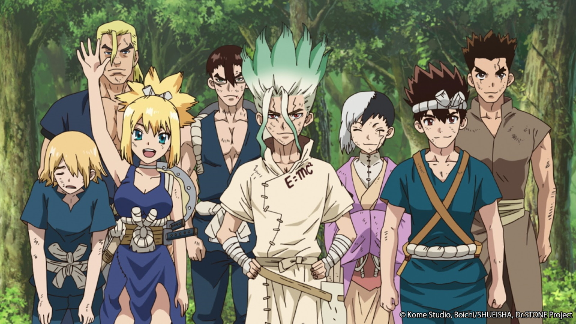
After five years of harboring unspoken feelings, high-schooler Taiju Ooki is finally ready to confess
his love to Yuzuriha Ogawa. Just when Taiju begins his confession however, a blinding green light
strikes the Earth and petrifies mankind around the world—turning every single human into stone.
Several millennia later, Taiju awakens to find the modern world completely nonexistent, as nature
has flourished in the years humanity stood still. Among a stone world of statues, Taiju encounters
one other living human: his science-loving friend Senkuu, who has been active for a few months.
Taiju learns that Senkuu has developed a grand scheme—to launch the complete revival of civilization
with science. Taiju's brawn and Senkuu's brains combine to forge a formidable partnership, and they
soon uncover a method to revive those petrified. However, Senkuu's master plan is threatened when
his ideologies are challenged by those who awaken. All the while, the reason for mankind's
petrification remains unknown.
26. Detroit Metal City
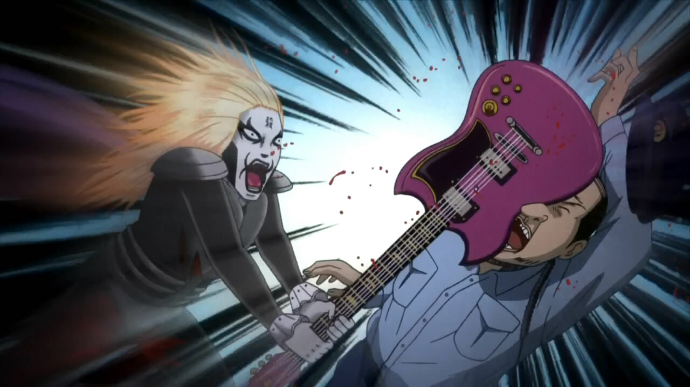
Dominating the world of indie music, Detroit Metal City (DMC) is a popular death metal band known for
its captivatingly dark and crude style. Its extravagant lead singer, Johannes Krauser II, is
especially infamous as a demonic being who has risen from the fiery pits of hell itself in order to
bring the world to its knees and lord over all mortals—or at least that's what he's publicized to
be.
Unbeknownst to his many worshippers, Krauser II is just the alter ego of an average college
graduate named Souichi Negishi. Although he is soft-spoken, peace-loving, and would rather listen to
Swedish pop all day, he must participate in DMC's garish concerts in order to make ends meet.
Detroit Metal City chronicles Negishi's hilarious misadventures as he attempts to juggle his hectic
band life, a seemingly budding romance, and dealing with his incredibly obsessive and dedicated
fans.
25. Chainsaw Man
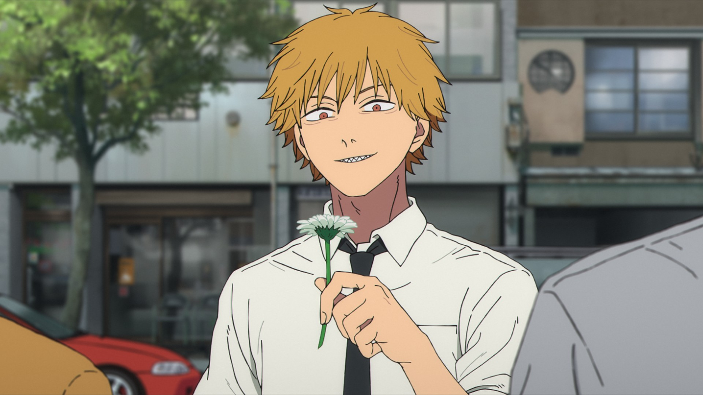
Denji is robbed of a normal teenage life, left with nothing but his deadbeat father's overwhelming
debt. His only companion is his pet, the chainsaw devil Pochita, with whom he slays devils for money
that inevitably ends up in the yakuza's pockets. All Denji can do is dream of a good, simple life:
one with delicious food and a beautiful girlfriend by his side. But an act of greedy betrayal by the
yakuza leads to Denji's brutal, untimely death, crushing all hope of him ever achieving happiness.
Remarkably, an old contract allows Pochita to merge with the deceased Denji and bestow devil powers
on him, changing him into a hybrid able to transform his body parts into chainsaws.
Because
Denji's
new abilities pose a significant risk to society, the Public Safety Bureau's elite devil hunter
Makima takes him in, letting him live as long as he obeys her command. Guided by the promise of a
content life alongside an attractive woman, Denji devotes everything and fights with all his might
to make his naive dreams a reality.
24. The Disastrous Life Of Saiki K
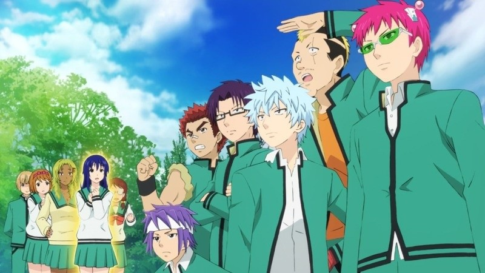
To the average person, psychic abilities might seem a blessing; for Kusuo Saiki, however, this could
not be further from the truth. Gifted with a wide assortment of supernatural abilities ranging from
telepathy to x-ray vision, he finds this so-called blessing to be nothing but a curse. As all the
inconveniences his powers cause constantly pile up, all Kusuo aims for is an ordinary, hassle-free
life—a life where ignorance is bliss. Unfortunately, the life of a psychic is far from quiet.
Though
Kusuo tries to stay out of the spotlight by keeping his powers a secret from his classmates, he ends
up inadvertently attracting the attention of many odd characters, such as the empty-headed Riki
Nendou and the delusional Shun Kaidou. Forced to deal with the craziness of the people around him,
Kusuo comes to learn that the ordinary life he has been striving for is a lot more difficult to
achieve than expected.
23. Horimiya
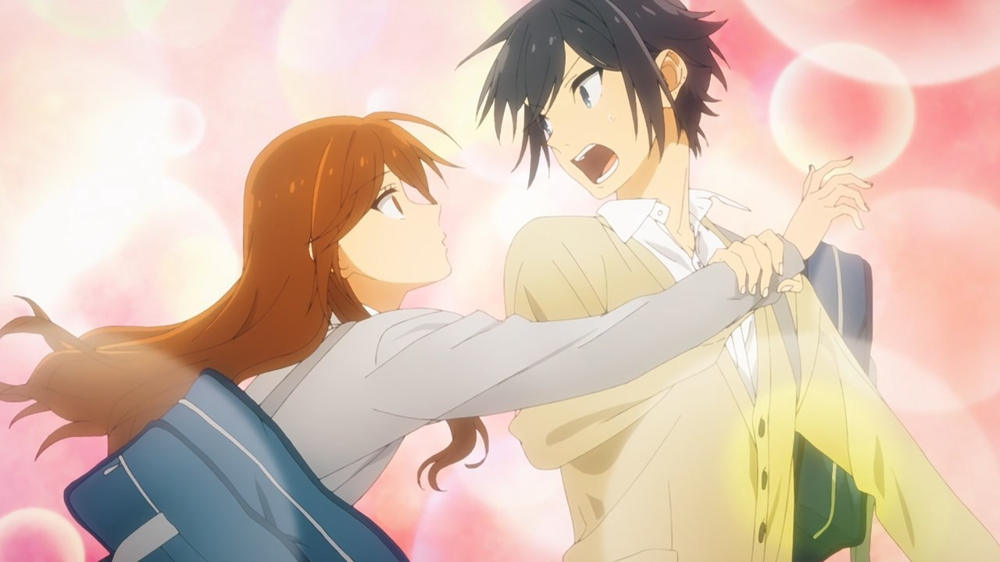
On the surface, the thought of Kyouko Hori and Izumi Miyamura getting along would be the last thing
in people's minds. After all, Hori has a perfect combination of beauty and brains, while Miyamura
appears meek and distant to his fellow classmates. However, a fateful meeting between the two lays
both of their hidden selves bare. Even though she is popular at school, Hori has little time to
socialize with her friends due to housework. On the other hand, Miyamura lives under the noses of
his peers, his body bearing secret tattoos and piercings that make him look like a gentle
delinquent.
Having opposite personalities yet sharing odd similarities, the two quickly
become
friends and often spend time together in Hori's home. As they both emerge from their shells, they
share with each other a side of themselves concealed from the outside world.
22. Solo Leveling
Humanity was caught at a precipice a decade ago when the first gates—portals linked with other
dimensions that harbor monsters immune to conventional weaponry—emerged around the world. Alongside
the appearance of the gates, various humans were transformed into hunters and bestowed superhuman
abilities. Responsible for entering the gates and clearing the dungeons within, many hunters chose
to form guilds to secure their livelihoods. Sung Jin-Woo is an E-rank hunter dubbed as the weakest
hunter of all mankind.
While exploring a supposedly safe dungeon, he and his party
encounter an
unusual tunnel leading to a deeper area. Enticed by the prospect of treasure, the group presses
forward, only to be confronted with horrors beyond their imagination. Miraculously, Jin-Woo survives
the incident and soon finds that he now has access to an interface visible only to him. This
mysterious system promises him the power he has long dreamed of—but everything comes at a price.
21. Ghost Stories (Dub)

Years ago, all of the ghosts in a haunted schoolhouse were banished by a certain student. Now, they're back—and they want revenge... Satsuki and Keiichirou Miyanoshita are two siblings recovering from the tragic loss of their mother. After moving to their mother's hometown, they learn that the local school they have transferred to is an old building—one said to be haunted. Despite initially brushing it off as a silly rumor, the two soon discover that ghosts are indeed real and that they're after them! Gakkou no Kaidan is the creepy tale of the lives of these siblings and their newfound friends as they try to survive the school's ghosts—with a little help from their pet cat along the way.
20. Tokyo Ghoul

A sinister threat is invading Tokyo: flesh-eating "ghouls" who appear identical to humans and blend into their population. Reserved college student Ken Kaneki buries his nose in books and avoids the news of the growing crisis. However, the appearance of an attractive woman named Rize Kamishiro shatters his solitude when she forwardly asks him on a date. While walking Rize home, Kaneki discovers she isn't as kind as she first appeared, and she has led him on with sinister intent. After a tragic struggle, he later awakens in a hospital to learn his life was saved by transplanting the now deceased Rize's organs into his own body. Kaneki's body begins to change in horrifying ways, and he transforms into a human-ghoul hybrid. As he embarks on his new dreadful journey, Kaneki clings to his humanity in the evolving bloody conflict between society's new monsters and the government agents who hunt them.
19. Darling In The Franxx
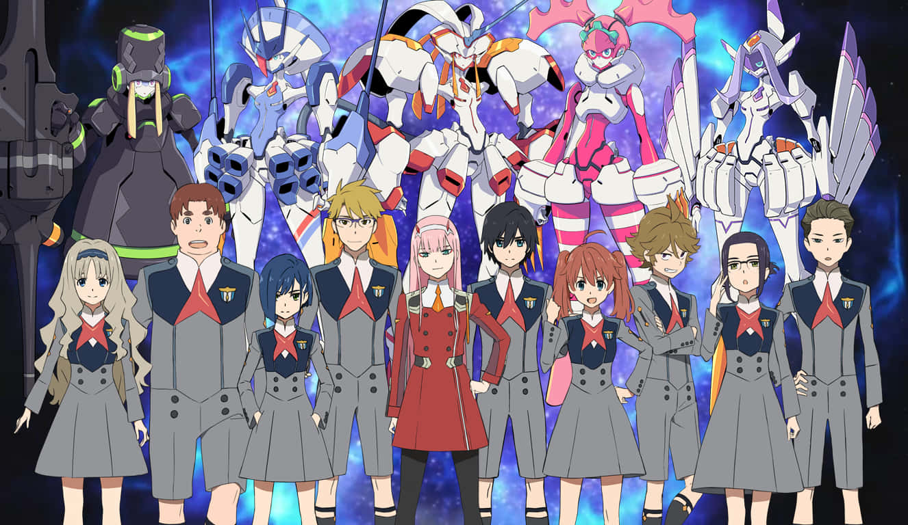
In a distant future, humanity is on the brink of extinction due to giant creatures called Klaxosaurs, forcing survivors to live in fortified cities. Children are raised solely to pilot powerful mechas known as FranXX in boy-girl pairs to fight these beasts. Hiro, a former prodigy who has lost his confidence after failing an important test, meets the mysterious horned girl Zero Two, an infamous pilot. When a Klaxosaur attacks, Hiro becomes her partner, defeats the enemy, and is given a chance at redemption—though it may come at a great cost.
18. Gachiakuta

The inhabitants of a certain wealthy town think nothing of throwing objects away. However, their
waste is priceless to Rudo, a resident of the town's slums. Despite the constant warnings from his
adoptive father Regto, Rudo spends his days searching for reusable materials that would otherwise be
sent to the giant disposal area known as the Pit. Due to its vastness, the Pit doubles as a means of
criminal punishment; those dropped in are never to return again.
When Regto is murdered by
a
mysterious assailant, Rudo is falsely accused of the crime and thrown into the Pit. To his surprise,
he awakens in a trash-filled area inhabited by enormous monsters formed from the junk. As the toxic
air and Trash Beasts push Rudo to the brink of death, he is saved by Enjin, one of the Cleaners who
wield weapons known as Vital Instruments to fight the monstrosities. Having gained his own Vital
Instrument, Rudo soon joins the Cleaners in the hopes of finding a way to escape the Pit and avenge
his father.
17. Ranma 1/2 (2024)
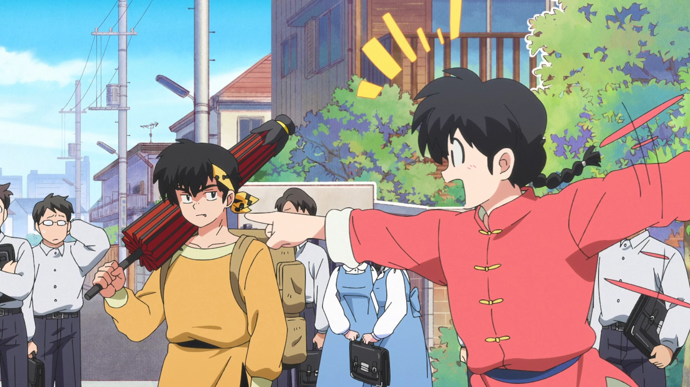
During their martial arts training expedition in China, Ranma Saotome and his father Genma suffered
an accident, which in turn, afflicted them with a curse—whenever they are doused with cold water,
Ranma transforms into a girl, while his father turns into a panda! Only hot water can reverse these
changes, but any further contact with cold water opens the can of worms once more. Unfortunately,
the trouble does not end there, as Ranma finds out about his betrothal to one of the daughters of
Soun Tendou, his father's closest friend.
During the families' first meeting, it is decided
that
Ranma is to be married to Akane, the youngest daughter, a decision that is met with vehement
protests from both sides. The two are simply not compatible, yet they are forced to live under one
roof. Ranma's status quo further adds to the chaos, leading him to a series of comedic situations
and misunderstandings that, in the grand scheme of things, may just be what he needs to work with
Akane.
16. Frieren

During their decade-long quest to defeat the Demon King, the members of the hero's party—Himmel
himself, the priest Heiter, the dwarf warrior Eisen, and the elven mage Frieren—forge bonds through
adventures and battles, creating unforgettable precious memories for most of them. However, the time
that Frieren spends with her comrades is equivalent to merely a fraction of her life, which has
lasted over a thousand years. When the party disbands after their victory, Frieren casually returns
to her "usual" routine of collecting spells across the continent. Due to her different sense of
time, she seemingly holds no strong feelings toward the experiences she went through.
As the years pass, Frieren gradually realizes how her days in the hero's party truly impacted her.
Witnessing the deaths of two of her former companions, Frieren begins to regret having taken their
presence for granted; she vows to better understand humans and create real personal connections.
Although the story of that once memorable journey has long ended, a new tale is about to begin.
15. Natsume's Book Of Friends

Due to an unusual ability to see strange creatures called youkai, Takashi Natsume has never fit in.
Passed around from one foster home to another, he was left isolated and lonely. Over time, he has
accepted that no one would ever believe him and has closed himself off to his current caretakers and
classmates. When Natsume accidentally breaks an intangible barrier, he frees Madara—a mighty spirit
in the form of a lucky cat. Madara notices that Natsume bears a remarkable resemblance to his late
grandmother Reiko Natsume, an outcast girl who became known across the youkai world for creating the
Book of Friends. It is now in Natsume's possession, along with its power to call upon the written
names of the youkai Reiko had defeated.
With no interest in its powers, Natsume decides to
keep the
book for the sake of his grandmother's memories and to protect it from scheming youkai. Therefore,
he makes a deal with Madara: he will hand him the book once his time is up, and in turn, Madara will
act as Natsume's unofficial bodyguard, nicknamed Nyanko-sensei. With his newfound goal of freeing
those Reiko had sealed, Natsume's relationship with both youkai and humans slowly begins to improve.
14. Handa Kun
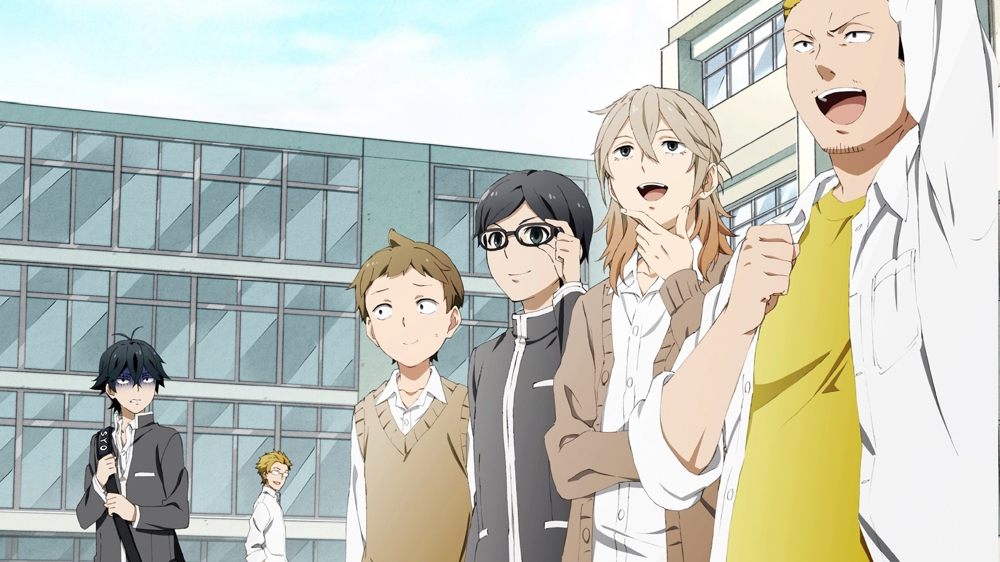
Hated by everyone around him, Sei Handa goes about his high school life regarded as an outcast—or at least that is what he believes. In reality, Handa is the most popular student on campus, revered by all for his incomparable calligraphy skills, good looks, and cool personality. However, due to an endless series of misunderstandings, Handa perceives the worship he receives from his legions of fans as bullying, leading the school's idol to shut himself off from the rest of his classmates. But distancing himself from his peers does not deter them from adoring him; in fact, his attempts at drawing attention away from himself often end up unintentionally converting even the most skeptical of students into believers. Fashion models, shut-in delinquents, obsessive fangirls, and more—none can stand against the brilliance that is Sei Handa.
13. Dandadan

Reeling from her recent breakup, Momo Ayase, a popular high schooler, shows kindness to her socially
awkward schoolmate, Ken Takakura, by standing up to his bullies. Takakura misunderstands her
intentions, believing he has made a new friend who shares his obsession with aliens and UFOs.
However, Momo's own eccentric occult beliefs lie in the supernatural realm; she thinks aliens do not
exist. A rivalry quickly brews as each becomes determined to prove the other wrong.
Despite their initial clash over their opposing beliefs, Momo and Takakura form an unexpected but
intimate friendship, a bond forged in a series of supernatural battles and bizarre encounters with
urban legends and paranormal entities. As both develop unique superhuman abilities, they learn to
supplement each other's weaknesses, leading them to wonder if their newfound partnership may be
about more than just survival.
12. Spy X Family
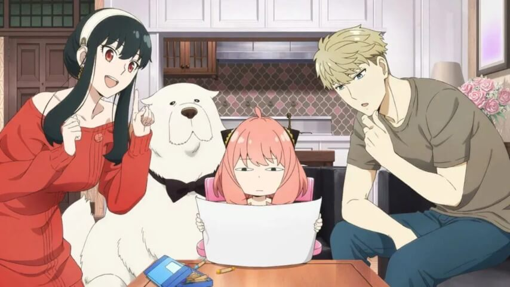
Amid rising tensions between rival nations Ostania and Westalis, master spy “Twilight” works to prevent war. Disguised as psychiatrist Loid Forger, he forms a fake family—marrying Yor Briar and adopting young Anya—to infiltrate Eden Academy and get close to politician Donovan Desmond. Unbeknownst to Loid, Yor is a secret assassin and Anya can read minds. Though built on lies, the Forger family slowly grows into a genuine bond of love.
11. Daily Lives Of Highschool Boys
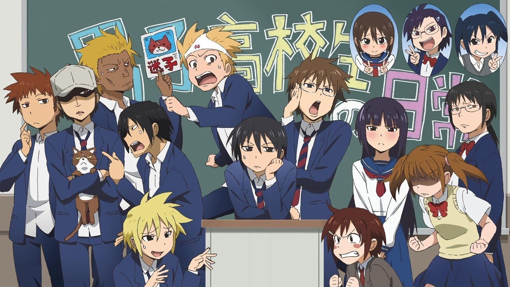
Roaming the halls of the all-boys Sanada North High School are three close comrades: the eccentric ringleader with a hyperactive imagination Hidenori, the passionate Yoshitake, and the rational and prudent Tadakuni. Their lives are filled with giant robots, true love, and intense drama... in their colorful imaginations, at least. In reality, they are just an everyday trio of ordinary guys trying to pass the time, but who said everyday life couldn't be interesting? Whether it's an intricate RPG reenactment or an unexpected romantic encounter on the riverbank at sunset, Danshi Koukousei no Nichijou is rife with bizarre yet hilariously relatable situations that are anything but mundane.
10. Scissor Seven

To the casual eye, the amnesiac bounty hunter Wu Liuqi looks quite intimidating. With his
deadly
telekinetic scissor techniques and his ability to seamlessly transform into anything, one
would
not
expect his modest demeanor. In fact, Wu is quite terrible at his job. Often times the
freelancer
can
be
found botching an assassination or targeting the wrong person.
While his failures could be due to his subpar skills, it usually boils down to him being a
normal
kid,
with a heart unsuited for his line of work. Accompanied by his feathered friend Dai Bo, Wu
is on
a
simple quest to regain his memories. Although his inconspicuous day job as a hairdresser and
his
after-hours occupation are simply a means for him to repay debt, his various ventures seem
to
intertwine
with his pursuit to recover his lost past.
9. Hells Paradise
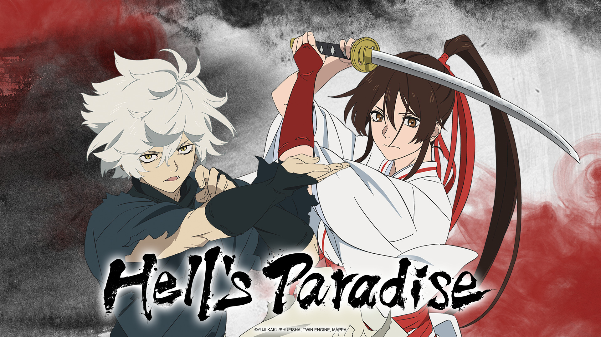
Sentenced to death, ninja Gabimaru the Hollow finds himself apathetic. After leading a
blood-soaked
life, Gabimaru believes he deserves to die. However, every attempt to execute him
inexplicably
fails. Finally, Sagiri Yamada Asaemon, a fledgling member of a famed executioner clan, is
asked
to
take Gabimaru's life; yet Sagiri makes no move to kill him as requested.
Insisting that Gabimaru will not die because of his love for his wife, Sagiri instead offers
him
the
chance to obtain a full pardon for his crimes. If he can travel to the island of Shinsekyo
and
obtain the Elixir of Life—which supposedly grants immortality—and bring it back for the
shogun,
then
his freedom will be assured. But of the many who have traveled to Shinsekyo in search of the
mythical Elixir, not a single person has returned sound of mind, if at all. Though unaware
of
the
numerous dangers ahead, Gabimaru decides to accept the offer—alongside ten other death row
convicts—in hope that he and his wife may finally live in peace.
8. The Eminence In Shadow
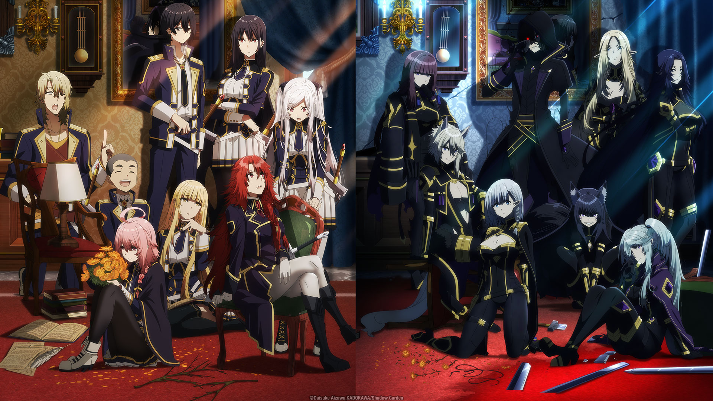
For as long as he can remember, Minoru Kagenou has been fixated on becoming as strong as
possible,
which has led him to undertake all kinds of rigorous training. This wish, however, does not
stem
from a desire to be recognized by others; rather, Minoru does everything he can to blend in
with
the
crowd. So, while pretending to be a completely average student during the day, he arms
himself
with
a crowbar and ruthlessly thrashes local biker gangs at night. Yet when Minoru finds himself
in a
truck accident, his ambitions seemingly come to a sudden end. In his final moments, he
laments
his
powerlessness—no matter how much he trained, there was nothing he could do to overcome his
human
limitations.
But instead of dying, Minoru reawakens as Cid, the second child of the noble Kagenou family,
in
another world—one where magic is commonplace. With the power he so desired finally within
his
grasp,
he dons the moniker "Shadow" and establishes Shadow Garden: a group whose sole purpose is to
combat
the enigmatic Cult of Diablos, an organization born from Cid's imagination.
7. To Be Hero X

This is a world where heroes are created by people's trust, and the hero who has received the most trust is known as "X." In this world, people's trust can be calculated by data, and these values will be reflected on everyone's wrist. As long as enough trust points are obtained, ordinary people can also have superpowers and become superheroes that save the world. However, the ever-changing trust value makes the hero's path full of unknowns...
6. Barakamon
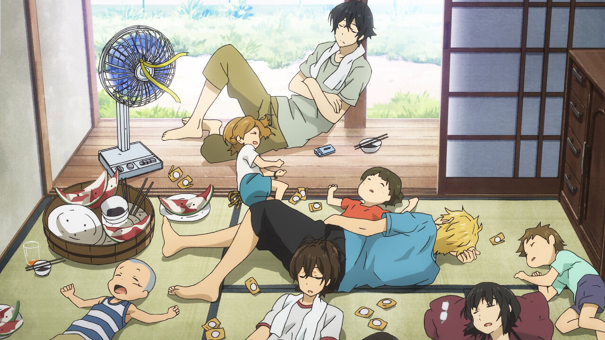
Seishuu Handa is an up-and-coming calligrapher: young, handsome, talented, and unfortunately,
a
narcissist to boot. When a veteran labels his award-winning piece as "unoriginal," Seishuu
quickly
loses his cool with severe repercussions. As punishment, and also in order to aid him in
self-reflection, Seishuu's father exiles him to the Goto Islands, far from the comfortable
Tokyo
lifestyle the temperamental artist is used to. Now thrown into a rural setting, Seishuu must
attempt
to find new inspiration and develop his own unique art style—that is, if boisterous children
(headed
by the frisky Naru Kotoishi), fujoshi middle schoolers, and energetic old men stop barging
into
his
house!
The newest addition to the intimate and quirky Goto community only wants to get some work
done,
but
the islands are far from the peaceful countryside he signed up for. Thanks to his wacky
neighbors
who are entirely incapable of minding their own business, the arrogant calligrapher learns
so
much
more than he ever hoped to.
5. Jujutsu Kaisen
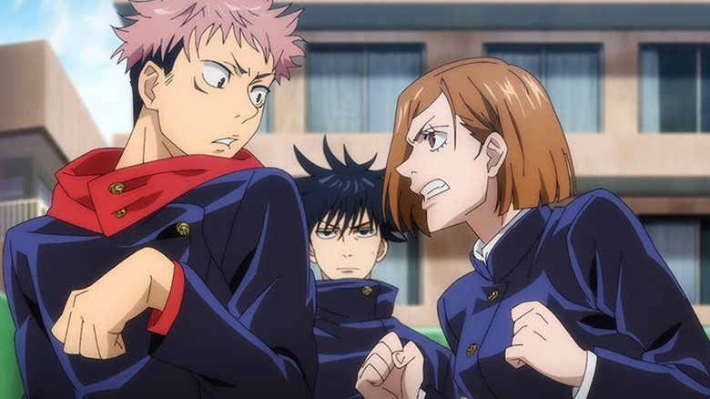
Idly indulging in baseless paranormal activities with the Occult Club, high schooler Yuuji Itadori spends his days at either the clubroom or the hospital, where he visits his bedridden grandfather. However, this leisurely lifestyle soon takes a turn for the strange when he unknowingly encounters a cursed item. Triggering a chain of supernatural occurrences, Yuuji finds himself suddenly thrust into the world of Curses—dreadful beings formed from human malice and negativity—after swallowing the said item, revealed to be a finger belonging to the demon Sukuna Ryoumen, the King of Curses. Yuuji experiences first-hand the threat these Curses pose to society as he discovers his own newfound powers. Introduced to the Tokyo Prefectural Jujutsu High School, he begins to walk down a path from which he cannot return—the path of a Jujutsu sorcerer.
4. Fairy Tail
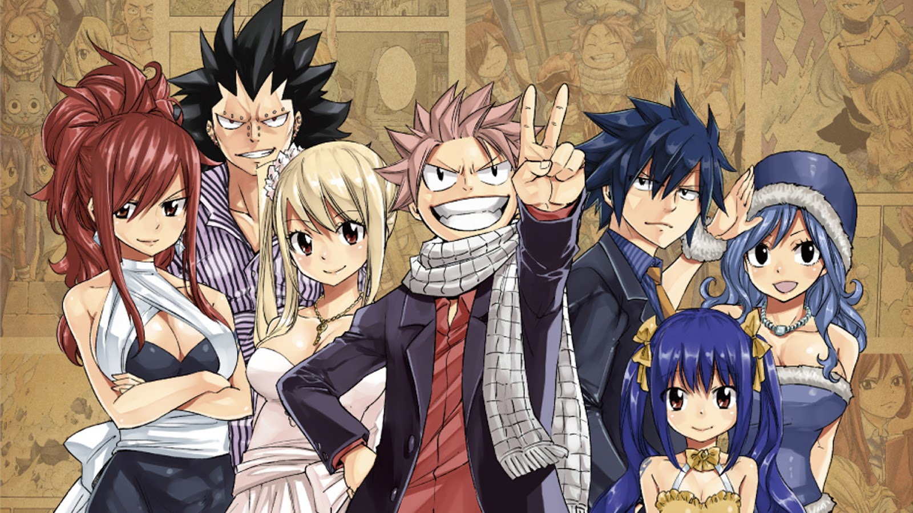
In the enchanted Kingdom of Fiore, the lively Lucy Heartfilia has one wish: to join the
renowned
Fairy Tail—one of the many magical wizard guilds scattered around the continent. Luckily, a
chance
encounter with Natsu Dragneel, the "Salamander" of Fairy Tail, whisks her into the legendary
guild.
From Natsu's rivalrous antics with ice wizard Gray Fullbuster to the frightening presence of
the
unmatched combat goddess Erza Scarlet, Fairy Tail's powerful mages have a slight penchant
for
trouble.
Through all the lucrative odd jobs and adventures to save the world from destruction lies an
absolute and unyielding trust stronger than family that has formed between each guild
member.
Teaming up with Natsu, Gray, and Erza, Lucy finds herself amidst the guild's most misfit
wizards.
But as they constantly stand in the eye of every danger, there is one name that never ceases
to
resurface: Zeref, the feared master of dark magic.
3. JoJo's Bizarre Adventure
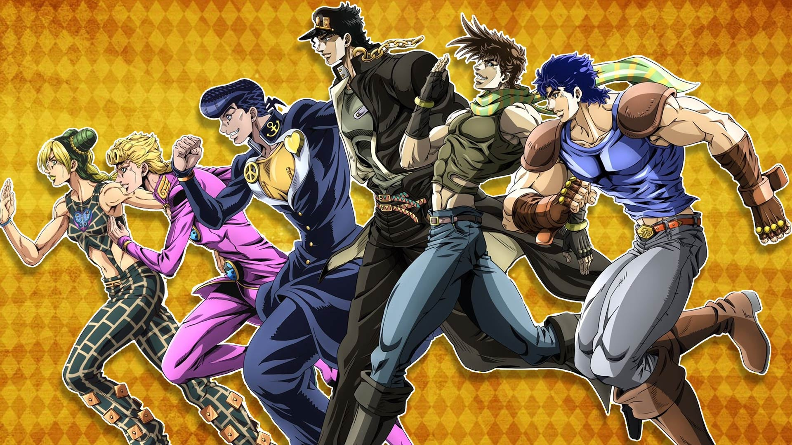
JoJo's Bizarre Adventure follows the ever-expanding legacy of the Joestar family, with each generation introducing a new protagonist known as “JoJo.” Every part features a fresh setting, a unique tone, and a new cast, making each story feel distinct while still connected through the family's lineage. Across different eras and continents, the Joestars confront a wide variety of supernatural dangers, starting with ancient vampires and eventually evolving into complex battles involving Stands, powerful manifestations of one's spirit. Despite the changing styles and heroes, the series is unified by the Joestar family's duty, courage, and determination as they face increasingly bizarre and world-shaping threats.
2. Bleach

Ichigo Kurosaki is an ordinary high schooler—until his family is attacked by a Hollow, a
corrupt
spirit that seeks to devour human souls. It is then that he meets a Soul Reaper named Rukia
Kuchiki,
who gets injured while protecting Ichigo's family from the assailant. To save his family,
Ichigo
accepts Rukia's offer of taking her powers and becomes a Soul Reaper as a result.
However, as Rukia is unable to regain her powers, Ichigo is given the daunting task of
hunting
down
the Hollows that plague their town. However, he is not alone in his fight, as he is later
joined
by
his friends—classmates Orihime Inoue, Yasutora Sado, and Uryuu Ishida—who each have their
own
unique
abilities. As Ichigo and his comrades get used to their new duties and support each other on
and
off
the battlefield, the young Soul Reaper soon learns that the Hollows are not the only real
threat
to
the human world.
1. Gintama
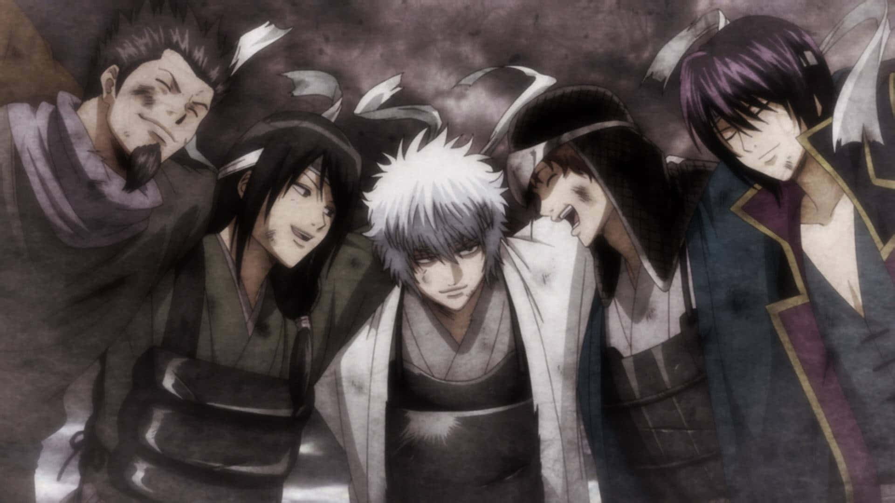
Edo is a city that was home to the vigor and ambition of samurai across the country. However,
following feudal Japan's surrender to powerful aliens known as the "Amanto," those
aspirations
now
seem unachievable. With the once-influential shogunate rebuilt as a puppet government, a new
law
is
passed that promptly prohibits all swords in public. Enter Gintoki Sakata, an eccentric
silver-haired man who always carries around a wooden sword and maintains his stature as a
samurai
despite the ban.
As the founder of Yorozuya, a small business for odd jobs, Gintoki often embarks on
endeavors to
help other people—though usually in rather strange and unforeseen ways. Assisted by
Shinpachi
Shimura, a boy with glasses supposedly learning the way of the samurai; Kagura, a tomboyish
girl
with superhuman strength and an endless appetite; and Sadaharu, their giant pet dog who
loves
biting
on people's heads, the Yorozuya encounter anything from alien royalty to scuffles with local
gangs
in the ever-changing world of Edo.